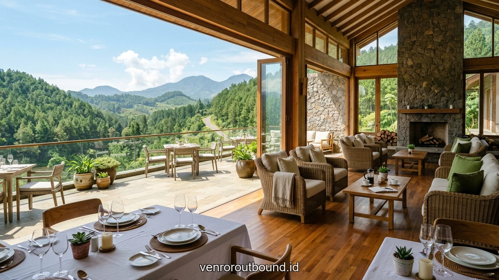

1. Konsep Dasar Paket: Menyatukan Visi Operasional Lintas Divisi
Jawaban singkat: Vendor Outbound menyediakan Paket Sinergi Inter Departemen terintegrasi mencakup arena privat, perlengkapan K3, fasilitator BNSP, katering higienis, dan laporan evaluasi dinamika tim di Batu Malang. Dirancang khusus untuk mematahkan silo organisasi, meningkatkan efektivitas koordinasi antar-divisi, dan menciptakan iklim kerja yang kompak dan suportif.
Keberhasilan sebuah perusahaan besar mencapai target pertumbuhan strategis sangat ditentukan oleh seberapa harmonis irama kerja antardepartemen pendukungnya. Paket Outbound Sinergi Inter-Departemen 2026 dihadirkan sebagai jawaban komprehensif bagi korporasi yang ingin merevitalisasi kerja sama lintas fungsi di tengah dinamika persaingan yang kian kompetitif.
Melalui perpaduan modul simulasi dinamis di alam terbuka pegunungan Batu Malang dan fasilitas kenyamanan standar resort berbintang, agenda ini dirancang untuk menciptakan titik temu psikologis yang menyenangkan bagi seluruh divisi. Bersama tim fasilitator berpengalaman dari Vendor Outbound Indonesia, setiap skenario permainan dikorelasikan secara tepat dengan tantangan nyata koordinasi kerja di kantor.
Pola kerja modern yang menuntut kecepatan tanggap sering kali terbentur oleh keengganan individu dalam mengambil risiko atau mengakui kesalahan sejak dini. Padahal, esensi mendasar dari kelincahan organisasi adalah kemampuan bereksperimen, belajar dari ketidaksempurnaan, dan mengulangi proses perbaikan (*continuous improvement*) dengan tempo yang terjaga. Di alam terbuka, prinsip ini dialami langsung saat strategi awal yang dirancang di atas kertas tidak berjalan sesuai rencana medan.
Interaksi langsung dengan tantangan alam juga berperan efektif dalam mereduksi ketegangan psikologis. Paparan udara segar pegunungan, pemandangan hijau pinus, dan stimulasi kinestetik memicu pelepasan hormon endorfin dan serotonin yang secara klinis terbukti menurunkan kadar kortisol pemicu stres kerja kronis. Kondisi mental yang rileks dan segar menjadi fondasi optimal bagi terbangunnya komunikasi yang jujur, empatik, serta bebas dari intrik politik kantor.
2. Rincian Fasilitas dan Modul Simulasi yang Disediakan
Dalam setiap paket yang kami tawarkan, seluruh kebutuhan operasional telah tertata secara all-inclusive untuk memudahkan tugas panitia pelaksana korporat:
- Akses Arena Outdoor & Indoor Hall Privat: Lahan hijau rumput alami privat yang steril dari keramaian umum, lengkap dengan pendopo / hall cadangan untuk antisipasi cuaca hujan.
- Instruktur & Fasilitator BNSP: Master trainer berlisensi resmi BNSP yang menguasai teknik pemandu andragogi dan resolusi dinamika konflik kelompok.
- Paket Katering Sehat & Refreshment: Hidangan prasmanan lezat bercita rasa Nusantara, snack tradisional hangat, teh/kopi tiada henti, dan air mineral bebas isi ulang.
- Dokumentasi Multimedia Profesional: Tim fotografer dan videografer yang mengabadikan momen kebersamaan hingga menghasilkan video aftermovie beresolusi tinggi.
Dalam praktiknya, banyak inisiatif sinergi di kantor gagal bukan karena anggota tim tidak memahami alur proses, melainkan karena ketiadaan rasa aman psikologis (*psychological safety*). Ketika seorang staf merasa takut dihakimi saat mengemukakan kendala operasional, transparansi kerja otomatis terhenti. Simulasi luar ruang menghadirkan ruang uji yang aman di mana kesalahan taktis dianggap sebagai data pembelajaran bersama, bukan aib personal.
Lebih jauh lagi, simulasi berbasis alam menuntut kepemimpinan situasional yang dinamis. Seseorang yang terbiasa menjadi pengambil keputusan mutlak di ruang kantor mungkin harus mendengarkan arahan dari staf junior yang memiliki kepekaan navigasi lebih baik di lapangan. Pengalaman bertukar peran ini secara efektif meruntuhkan arogansi fungsional dan menumbuhkan rasa saling menghargai antarlini organisasi secara berkelanjutan.

Strategi Sinergi Inter-Departemen Tanpa Stres: Solusi Efektif Membangun Resilience Tim
Pahami bagaimana aktivitas alam terbuka mampu meredakan stres kerja dan memupuk daya adaptasi cepat.
3. Tabel Perbandingan Opsi Paket Sinergi Inter Departemen 2026
Untuk memudahkan penentuan format yang paling relevan dengan kebutuhan institusi Anda, tabel perbandingan berikut menyajikan matriks evaluasi aspek-aspek kunci yang perlu dipertimbangkan:
| Fitur & Fasilitas | Paket Standard One-Day Sinergi | Paket Premium 2D1N Retreat Sinergi |
|---|---|---|
| Durasi & Alokasi Waktu | 1 Hari Penuh (08.30 – 16.30 WIB) | 2 Hari 1 Malam (Menginap di Resort Bintang) |
| Akomodasi Kamar | Non-Akomodasi (Transit Room) | Kamar Resort Bintang (Twin/Triple Share) |
| Rasio Fasilitator BNSP | 1 Fasilitator mendampingi 10 Peserta | 1 Fasilitator mendampingi 7 Peserta + Co-Trainer |
| Konsumsi & Jamuan Makan | 1x Makan Siang Prasmanan, 2x Coffee Break | 3x Makan Prasmanan Premium, 2x Coffee Break, BBQ Night |
| Layanan Khusus Tambahan | Foto Dokumentasi Resolusi Tinggi | Foto & Video Cinematic Drone + Laporan Evaluasi Dinamika Tim |
Melalui visualisasi komparatif di atas, terlihat jelas bahwa perbedaan mendasar terletak pada kedalaman retensi memori dan keaslian respons emosional peserta. Dalam seminar kelas konvensional, peserta cenderung memberikan jawaban normatif yang sesuai dengan ekspektasi teori manajemen. Sebaliknya, saat dihadapkan pada keterbatasan waktu dan rintangan fisik nyata di alam bebas, karakter asli dan refleks kepemimpinan yang sesungguhnya akan muncul secara transparan.
Kondisi transparan inilah yang memberikan bahan baku paling otentik bagi master trainer untuk melakukan proses fasilitasi dan refleksi mendalam. Pembelajaran tidak lagi bersifat hafalan konsep, melainkan tertanam menjadi memori otot (*muscle memory*) dan kesadaran emosional yang siap diaktifkan kembali saat tim menghadapi krisis proyek nyata di lingkungan korporasi.
4. Standar Kenyamanan Venue & Katering Bersih Higienis
Kenyamanan dan kepuasan peserta merupakan tolok ukur kesuksesan yang sangat kami jaga. Seluruh venue yang menjadi mitra resmi Vendor Outbound di Batu Malang dipilih berdasarkan standar kebersihan sanitasi yang tinggi, ketersediaan musala yang nyaman, toilet yang memadai untuk rombongan besar, serta area parkir bus pariwisata yang luas.
Dalam aspek konsumsi, menu makanan disajikan hangat oleh koki berpengalaman dengan pilihan menu Nusantara seimbang yang higienis dan lezat, menjaga energi dan stamina seluruh karyawan sepanjang sesi berlangsung.

Setiap fasilitator pendamping dibekali lisensi resmi BNSP yang mencakup kompetensi pertolongan pertama pada kecelakaan (P3K) darurat, mitigasi cedera otot, serta prosedur evakuasi medis darurat. Komunikasi antarpos terhubung melalui jaringan radio dua arah terenkripsi, memastikan setiap perkembangan kondisi peserta dapat dipantau secara langsung oleh tim komando pusat (*incident command post*).
Selain aspek keselamatan fisik, kenyamanan hidrasi dan nutrisi peserta diperhatikan dengan teliti. Penyediaan air mineral murni berkualitas, minuman elektrolit hangat khas pegunungan, serta hidangan bergizi seimbang yang higienis menjamin stamina para talenta perusahaan tetap bugar sejak sesi pembuka di pagi hari hingga agenda refleksi penutup di sore hari.
5. Alur Pemesanan dan Kustomisasi Program Terstruktur
Kami menerapkan proses reservasi yang transparan, mudah, dan akuntabel untuk mendukung panitia korporat:
- Konsultasi & Analisis Kebutuhan Awal: Tim konsultan kami mendiskusikan latar belakang budaya kerja, jumlah rombongan, serta target hasil spesifik yang diinginkan manajemen.
- Penyusunan Proposal Modular: Kami menyusun draf penawaran transparan dengan opsi rundown dan alokasi anggaran yang fleksibel.
- Survei Lapangan & Technical Meeting: Kunjungan bersama ke lokasi venue untuk menyelaraskan alur teknis, panggung, dan jalur keselamatan.
- Eksekusi Profesional & Laporan Akhir: Pelaksanaan agenda di lapangan secara tertib, diakhiri penyerahan laporan observasi dinamika tim kepada manajemen.

Analisis SOP & Efisiensi Biaya: Menentukan Program Sinergi Inter Departemen Paling Aman
Panduan memilih mitra outbound berlisensi BNSP dengan transparansi biaya operasional terbaik.
Konsistensi penjadwalan dan fleksibilitas durasi antarpos memungkinkan setiap peserta tetap fokus menyerap esensi pelatihan tanpa terburu-buru oleh tekanan waktu.
Pemberian jeda waktu refleksi (*reflection window*) selama 10 hingga 15 menit pascasimulasi pos memberikan kesempatan bagi otak peserta untuk mengendapkan pengalaman yang baru saja dilalui. Dalam fase ini, fasilitator mengajukan pertanyaan terbuka yang menstimulasi kesadaran metakognitif: mengapa strategi pertama gagal, faktor apa yang membuat kolaborasi berhasil, dan bagaimana pola interaksi tersebut mencerminkan hambatan kerja yang terjadi di kantor.
6. Keuntungan Berkolaborasi dengan Vendor Outbound Berpengalaman
Mempercayakan agenda penting perusahaan kepada Vendor Outbound memberikan serangkaian jaminan nilai tambah:
- Transparansi Anggaran Tanpa Biaya Tersembunyi: Semua rincian tertulis jelas di surat penawaran resmi.
- Fasilitator Berpengalaman & Lisensi BNSP: Interaksi dipandu oleh trainer yang memahami andragogi dan psikologi kelompok.
- Jaminan Keselamatan Kerja & P3K: Peralatan simulasi terawat berkala dengan standar keamanan tingkat tinggi.

Paket Leadership Camp
Pelatihan kepemimpinan lapangan untuk mengasah daya inisiatif, pengambilan keputusan, dan resiliensi tim.
Kombinasi evaluasi kuantitatif dan kualitatif memberikan gambaran menyeluruh terhadap dampak program terhadap budaya kerja perusahaan dalam jangka panjang.
Evaluasi berkelanjutan yang dilakukan pada rentang waktu 30 hingga 60 hari pascakegiatan menunjukkan bahwa organisasi yang secara konsisten menerapkan komitmen aksi (*action pledge*) pasca-outbound berhasil menekan angka pergantian karyawan (*turnover*) sukarela serta mempercepat penyelesaian target proyek tahunan secara signifikan.
7. Kesimpulan: Wujudkan Sinergi Nyata Organisasi Anda Sekarang
Kinerja organisasi yang luar biasa berawal dari keruntuhan sekat-sekat pemisah antardepartemen. Paket Outbound Sinergi Inter-Departemen 2026 adalah investasi terbaik untuk mengembalikan energi kebersamaan, rasa saling percaya, dan akselerasi performa bisnis institusi Anda ke tingkat tertinggi.
Memasuki iklim bisnis yang kian kompetitif di tahun 2026, keunggulan organisasi tidak lagi semata-mata bertumpu pada kecanggihan perangkat lunak atau modal finansial, melainkan pada ketangkasan emosional dan kekompakan manusianya. Menghadirkan program luar ruang yang dirancang dengan landasan psikologi kelompok yang solid adalah langkah strategis terbaik untuk memupuk modal sosial korporat Anda.
Ingin Merancang Program yang Tepat Sasaran untuk Institusi Anda?
Diskusikan profil peserta, preferensi lokasi pegunungan asri di Batu Malang, dan modul simulasi yang dirancang khusus bersama tim ahli kami di +62 82211221909.
Hubungi Kami via WhatsAppPertanyaan Sering Diajukan (FAQ)

Arby Ardiansyah
Praktisi pengembangan SDM dan perancang program experiential learning dengan pengalaman lebih dari 8 tahun memfasilitasi ratusan kegiatan outbound korporat, BUMN, dan acara kebersamaan keluarga di seluruh Jawa Timur.